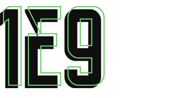
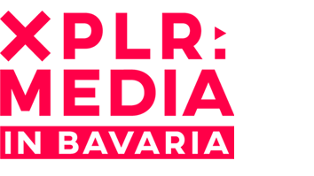

Projekte.

1E9 Magazin & Community
Mitgründung, Mitgestaltung von 1E9, Leitender Redakteur. Mitgestaltung und Planung von Events ... ebenso, wenn nötig, Designer und Gestalter.
- Rolle: Mitgründer, Redaktion & Design
- Zeitraum: 2019 - Heute

XPLR: MEDIA Reports
Im Rahmen von 1E9 war Michael Förtsch für XPLR: MEDIA in Bavaria federführend an Studien zu Themen wie Web3, Künstlicher Intelligenz und dem Fediverse in der Medienindustrie beteiligt.
- Rolle: Studienleitung & Autor
- Partner: Medien.Bayern GmbH
Kurator42 Newsletter
Seit 2019 veröffentlicht Michael Förtsch – leider viel zu selten und in unregelmäßigen Abständen – den Newsletter Kurator42. Darin empfiehlt er Filme, Serien, Podcasts und teilt Fundstücke aus dem Internet.
- Plattform: Substack
- Seit: 2019
Linkkiste
Ein simpler, vom legendären Bookmarking-Service Del.icio.us inspirierter privater Bookmarking-Dienst.
- Typ: Personal Tool
- Status: In Entwicklung
üxzView
Ein Bildbetrachtungs- und bearbeitungsprogramm für Windows, Linux und Mac.
- Typ: Personal Tool
- Status: In Entwicklung